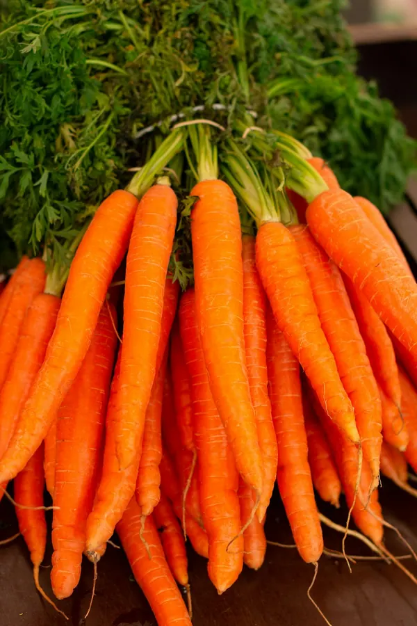
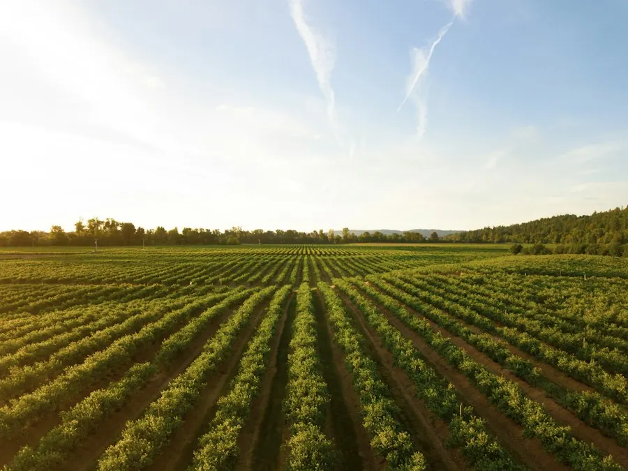
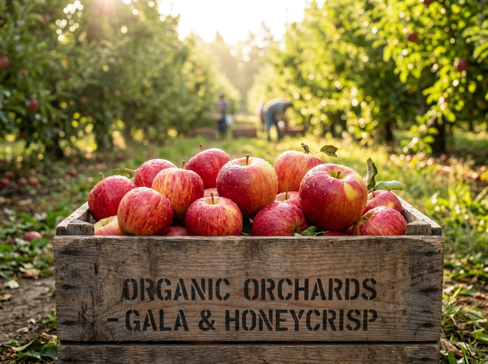
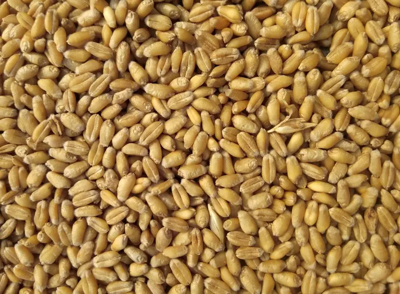
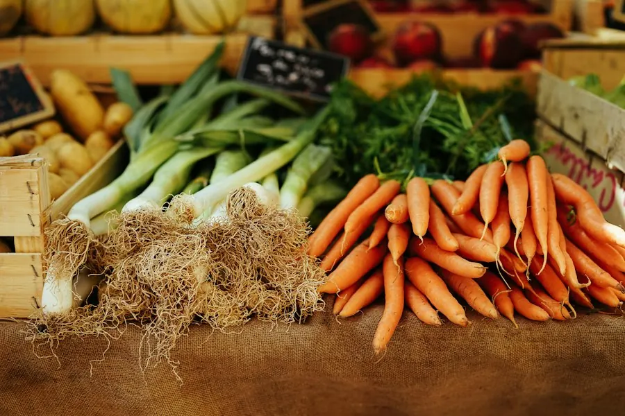
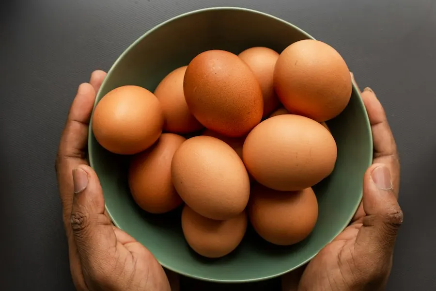
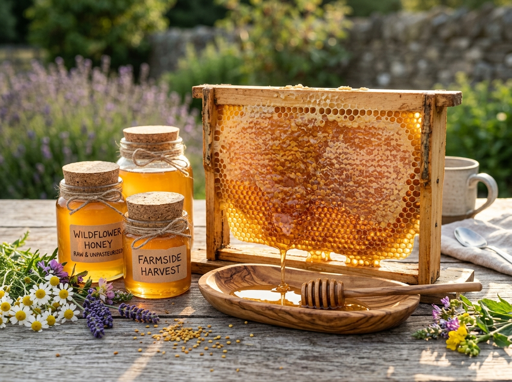
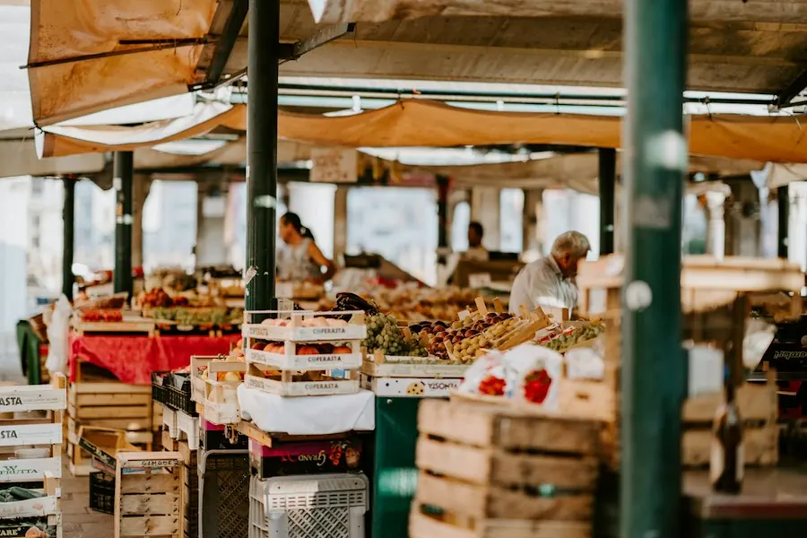

Direct From Soil: Certified Harvest Lots
Harvested at peak physiological ripeness from our pesticide-free Salem acreage. Available for commercial wholesale lot booking, institutional contracts, and cooperative retail distribution.
Current Harvest Batches Ready For Cold Dispatch
Every harvest lot includes gas-chromatography residue sheets, Brix sweetness metrics, and refrigerated truck traceability.

Organic Heritage Rainbow Carrots
Sweet, crunchy rainbow varieties hand-pulled at daybreak. Grown in deep composted loam without synthetic fungicides.

Vine-Ripened Cluster Tomatoes
High lycopene Roma and truss varieties naturally ripened on the vine without ethylene gassing. Exceptional umami flavor.

Crisp Mountain Orchard Apples
Hand-picked high-altitude apples completely free from chemical paraffin wax coatings or chemical preservation dips.

Heirloom Khapli Emmer Wheat
Low glycemic index ancient wheat rich in dietary beta-glucans. Aeration-cooled silos preserve natural moisture.

Virgin Cold-Pressed Farm Oils
Single-origin sesame, groundnut, and mustard oils extracted in traditional wood presses below 40°C to preserve antioxidants.

Pasture-Raised Organic Eggs
Deep golden yolks from hens foraging freely on clover and herbal pastures. Antibiotic-free and hormone-free certified.

Raw Honeycomb & Forest Honey
Unpasteurized wildflower honey and virgin wax comb harvested from apiaries foraging on organic neem and clover blossoms.

Medicinal & Botanical Herbs
Aromatic Genovese basil, rosemary, holy basil (Tulsi), and medicinal roots. High essential oil concentration.
Annual Crop Availability & Pre-Booking Calendar
Plan procurement cycles with guaranteed volume allocations locked at fair-trade minimum prices.
| Produce Line | Q1 (Jan - Mar) | Q2 (Apr - Jun) | Q3 (Jul - Sep) | Q4 (Oct - Dec) | Booking Window |
|---|---|---|---|---|---|
| 🥕 Heirloom Root Vegetables | Peak Harvest | Controlled Cold | Inter-crop Sowing | Early Harvest | 45 Days in Advance |
| 🍅 Greenhouse Cluster Tomatoes | Peak Harvest | Peak Harvest | Protected Flora | Peak Harvest | Year-Round Standing SLA |
| 🌾 Khapli Emmer Wheat | Maturation | Combine Harvest | Silo Aeration | Silo Aeration | Annual Contract (May) |
| 🍯 Raw Wildflower Honey | Brood Build | Spring Extraction | Forest Bloom | Autumn Extraction | Batch Reservation |
| 🌿 Fresh Botanical Herbs | Daily Cut | Daily Cut | Daily Cut | Daily Cut | Weekly Recurring Slots |
Analytical Quality Standards For Every Batch
We test for 240+ synthetic pesticides, organophosphates, and heavy metals before any crate is dispatched.
Synthetic Residues
GC-MS laboratory tested for zero synthetic chemical trace across all harvest lots.
Optimum Natural Sweetness
Refractometer calibrated sugar index indicating superior nutrient density and flavor.
Non-GMO Heirloom Seed
Proprietary open-pollinated seed lineage preserved by traditional farmer cooperatives.
Pre-Cooling Dispatch
From harvest basket to solar hydro-cooler within 240 minutes to preserve crispness.
Eco-Conscious Packaging Engineered For Zero Food Spoilage
We eliminate single-use plastics from farm gates to retail distribution with closed-loop returnable crates.
Reusable Returnable Crates (RPC)
Sanitized food-grade collapsible polypropylene containers. Vented walls allow cross-flow reefer chilling while stacking up to 8 tiers high without bruising.
Biodegradable Cornstarch Bio-Liners
Breathable plant-based bio-films maintaining 88% microclimate humidity and actively absorbing ethylene gas to retard premature senescence.
Phase-Change Ice Gel Inserts
Non-toxic plant-cellulose chilling packs maintaining steady 3°C core temperature during multi-stop distribution runs without wet slush puddle buildup.
Unbroken Refrigeration From Farm Gate To Kitchen Dock
Fresh vegetables respire rapidly after cutting. Our post-harvest cold chain halts metabolic degradation immediately through pressurized forced-air tunnels and insulated reefer fleets.
- ✓ 2°C to 4°C Monitored Routing: Real-time telematics log temperatures every 60 seconds with instant threshold SMS alerts.
- ✓ 100% Traceability QR Codes: Every master carton features a scannable batch code showing farm plot location, harvest hour, and agronomist signature.
- ✓ Guaranteed 24-Hour Regional Delivery: Daily scheduled routes serving hotels, cloud kitchens, and organic stores across southern India.
Cold Chain Quality SLA Guarantee
What Commercial Buyers Say About Stackly Harvest Quality
"The crisp sweetness and Brix rating of Stackly vine tomatoes and heritage carrots are unmatched. As an executive chef, having farm-fresh produce delivered at 3°C within 18 hours of harvest transformed our seasonal menu consistency."
"We supply 12 organic retail supermarkets. Switching to Stackly's returnable vented crates cut our vegetable shrinkage from 14% to under 2%. The GC-MS chemical residue lab sheets attached to every pallet give our shoppers absolute peace of mind."
Frequently Asked Questions For Commercial Buyers
Key information on lot minimums, recurring delivery contracts, and custom farm cultivation programs.
What is the minimum order quantity for wholesale lot pricing?
Our minimum order quantity (MOQ) for wholesale delivery is 50 kg for mixed greens, tomatoes, and culinary herbs, and 250 kg for grain staples like Khapli wheat. Smaller test crates (15 kg sample boxes) can be ordered by registered culinary buyers.
Can restaurants and food brands pre-book dedicated acreage?
Yes! Under our Contract Farming Alliances program, institutional partners can reserve from 2 to 50 acres for custom heirloom varieties, microgreens, or specialty herbs with guaranteed price stability across 12-month farming cycles.
How do we access the GC-MS pesticide residue test sheets?
Every pallet label includes a cryptographically verifiable QR code. Scanning it opens the certified laboratory certificate containing spectrometer readings, date of harvest, soil block ID, and moisture parameters.
What credit terms are available for commercial supermarket chains?
First-time orders are dispatched against advance payment or bank guarantee. Once established with a 60-day purchase track record, commercial buyers can qualify for net-15 or net-30 revolving invoicing directly via the Produce Buyer dashboard.